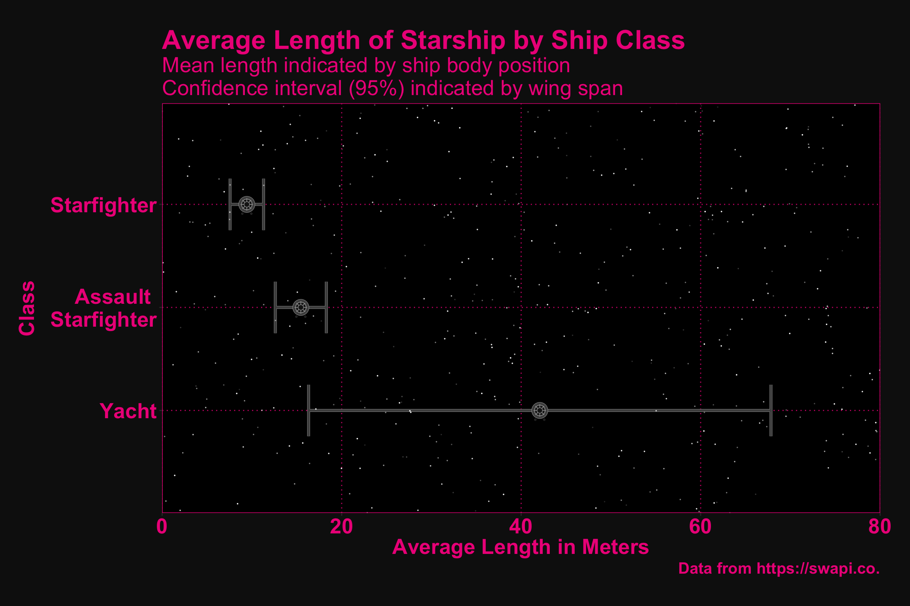
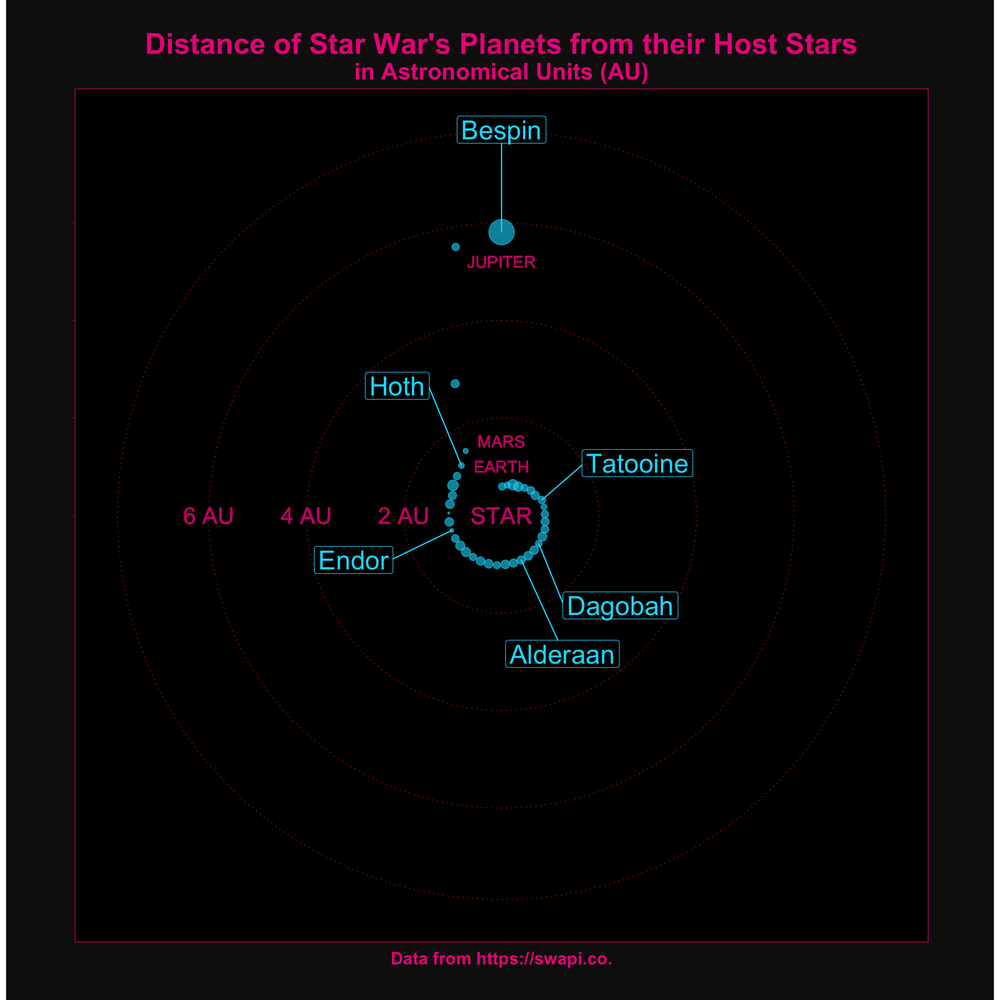

1.2 The Visualizations
1.2.1 The People
# people plot
people %>%
# filter for only females and males
filter(gender == "female" | gender == "male") %>%
# group by gender
group_by(gender) %>%
# calculate mean age and rounded mean age for geom_text
summarise(m_age = mean(birth_year, na.rm = TRUE),
m_age_r = round(m_age, 2),
m_age_r = paste(m_age_r, "YEARS")) %>%
# convert genders to title case and gender to a factor
mutate(gender = str_to_title(gender),
gender = as.factor(gender)) %>%
# plot gender vs age and fill by gender
ggplot(aes(x = gender, y = m_age, fill = gender)) +
# add the lightsaber blades to the plot
geom_saberblade() +
# add the lightsaber hilts to the plot
geom_saberhilt(column = 1) +
geom_saberhilt(column = 2) +
# set colour and fill values (i.e., red and green)
scale_fill_manual(values = c("#0FFF00", "#FF0000")) +
scale_colour_manual(values = c("#0FFF00", "#FF0000")) +
# add text with the mean ages to the plot
geom_text(aes(label = m_age_r, color = gender),
size = 6,
position = position_nudge(x = -.09, y = -8)) +
# add labels
labs(title = "Average age and gender",
y = "Age (years)",
x = "Gender",
legend = "Gender",
caption = "Data from https://swapi.co.") +
# customize using my theme
my_theme() +
# flip the coordinates
coord_flip()
1.2.1.1 Idea
Although not a great data/ink ratio, I believe the above figure would be memorable in displaying the ages of the characters in Star Wars. I would like to add more design elements to the plot (e.g., a more detailed lightsaber hilt, a glow on top of the saber). It think it would also be informative to add some text labels showing the actual ages of characters beside the bars. Yoda is also an outlier, so it may be appropriate to eliminate him from the plot.
1.2.1.2 Intended Audience
The intended audience for this visualization are fans of Star Wars and the general public.
1.2.1.3 Intended Message
Other than wanting to convey the average difference in ages among genders in the Star Wars universe, I think it is important to consider that the mean age of the female characters is so young compared to that of the male characters. It seems the recent movies have taken both incidental (e.g., Carrier Fisher) and deliberate (e.g., Laura Dern) steps to include older women. Star Wars would certainly benefit from being more inclusive when it comes to casting.
1.2.2 The Starships
# generate random x, y, and transparency data to use for plotting stars
stars_data <- tibble(x = sample(seq(from = 0, to = 4, by = .0001), 500),
y = sample(seq(from = 0, to = 80, by = .0001), 500),
trans = sample(seq(from = .1, to = .9, by = .0001), 500))
# starships plot
starships %>%
# group by starship_class
group_by(starship_class) %>%
# drop rows that have an NA for length
filter(!is.na(length)) %>%
# calculate mean length and standard deviation, as well as number of ships in
# that class
summarize(len_m = mean(length),
len_sd = sd(length),
len_n = n()) %>%
# retain classes that have more than one ship
filter(len_n > 1) %>%
# convert starship_class to title case and wrap multi-word levels
mutate(starship_class = str_to_title(starship_class),
starship_class = gsub(" ", " \n", starship_class)) %>%
# calculate standard error
mutate(len_se = len_sd / sqrt(len_n)) %>%
# plot starship class v starship length
ggplot(aes(x = fct_reorder(starship_class, desc(len_m)), y = len_m)) +
# add error bars
geom_errorbar(aes(ymin = len_m - (len_se * qnorm(.975)),
ymax = len_m + (len_se * qnorm(.975))),
width = .5, colour = "grey30", lwd = 1.2) +
# add stars
geom_point(data = stars_data, aes(x = x, y = y, alpha = trans),
colour = "white",
size = .001) +
# plot ship body points
geom_point(size = 6, colour = "grey30") +
geom_point(size = 3, colour = "grey10") +
geom_point(size = 4, colour = "grey60", shape = 13) +
# flip the coordinates
coord_flip() +
# add labels
labs(title = "Average length of starship by ship class",
y = "Average Length in Meters",
x = "Class",
caption = "Data from https://swapi.co.") +
# set y-axis limits and do not show value beyond limits of y-axis
scale_y_continuous(limits = c(0,80),
expand = expand_scale(mult = c(0, 0))) +
# customize using my theme
my_theme()
1.2.2.1 Idea
Points and standard error bars have always looked like Tie Fighters to me, so I decided I would try to plot the length of a starship against the starship class. As would be expected yachts are the largest ships with assult starfighters being slightly larger than basic starfighters. Although I am quite happy with the plot, I believe the fonts and text elements could be greatly improved. Representing all ships as Tie Fighters also may be misleading.
1.2.2.2 Intended Audience
Again, the intended audience for this visualization are people who like Star Wars. To appreciate the error bars some knowledge of statistics would likely be needed, as well.
1.2.2.3 Intended Message
That starship lengths differ by class and that the length of a yacht starship is far more variable than other starship classes.
1.2.3 The Planets
# planets plot
planets %>%
# select only variables of interest
select(name, au, radius) %>%
# drop planets that do not have (1) a name, (2) a distance from the sun (i.e.
# an AU), (3) an AU less than 2, and (4) a radius greater than 0.
filter(!is.na(name),
!is.na(au),
# au < 2,
radius != 0.00) %>%
# create a new variable indicating whether a planet was in the original
# trilogy
mutate(orig_tril = case_when(name == "Alderaan" |
name == "Tatooine" |
name == "Yavin" |
name == "Yavin 4" ~ "new_hope",
name == "Bespin" |
name == "Dagobah" |
name == "Hoth" ~ "empire_strikes",
name == "Endor" ~ "return_jedi",
TRUE ~ NA_character_)) %>%
# sort the data by their distance from the sun
arrange(au) %>%
# add a column that arbitrarily assigns the planet a degree
mutate(degree = seq(from = 1, to = 360, length.out = n())) %>%
# plot the planets distance from the sun against their arbitrary degree
ggplot(aes(x = degree, y = au)) +
# add labels indicating y-axis units and add star and earth
geom_text(aes(x = 0, y = 0, label = "STAR"),
color = "deeppink3",
size = 7) +
geom_text(aes(x = 270, y = 2, label = "2 AU"),
color = "deeppink3",
size = 7) +
geom_text(aes(x = 270, y = 4, label = "4 AU"),
color = "deeppink3",
size = 7) +
geom_text(aes(x = 270, y = 6, label = "6 AU"),
color = "deeppink3",
size = 7) +
# add solar system planets
geom_text(aes(x = 0, y = 1.00, label = "EARTH"),
color = "deeppink3",
size = 5) +
geom_text(aes(x = 0, y = 1.52, label = "MARS"),
color = "deeppink3",
size = 5) +
geom_text(aes(x = 0, y = 5.20, label = "JUPITER"),
color = "deeppink3",
size = 5) +
# add planet points; map size of the point to planet radius
geom_point(aes(size = radius), alpha = .6, color = "#00ddff") +
# make the coordinate polar
coord_polar(theta = "x") +
# set the limit of size values
scale_size_continuous(range = c(.5, 10)) +
# drop x-axis grid marks and breaks
scale_x_continuous(breaks = NULL) +
# set 2-axis limit
scale_y_continuous(limits = c(0,7)) +
# add labels
labs(title = "Distance of Star War's Planets from their Host Stars",
subtitle = "in Astronomical Units (AU)",
caption = "Data from https://swapi.co.") +
# customize using my theme
my_theme() +
# drop axis text and axis titles and center title, subtitle, and caption
theme(plot.title = element_text(hjust = 0.5),
plot.subtitle = element_text(hjust = 0.5),
plot.caption = element_text(hjust = 0.5),
axis.text = element_blank(),
axis.title = element_blank(),
plot.margin = unit(c(1, 2, 1, 2), "cm")) +
# add text identifying only those planetss from the original trilogy
geom_label_repel(data = . %>% filter(!is.na(orig_tril)), aes(label = name),
color = "#00ddff",
fill = NA,
size = 8,
min.segment.length = 0,
nudge_y = 2.1)
1.2.3.1 Idea
As interesting as I found the data in the first two plots, I think several plots could be devoted to the planets dataset. Specifically, the visualizations could be framed around the common theme of astronomy, serving as an instructive tool for teaching concepts from astronomy (e.g., Keppler’s third law, calculations of gravitational force). The present plot shows the relationship between a planet’s surface water and its distance from the sun. I would like to add a solar system dataset to the Starwar’s planets dataset and use facetwrap to provide a side by side comparison of fictional and non-fictional planets.
1.2.3.2 Intended Audience
Fans of Star Wars or anyone who has an interest in astronomy or phyics.
1.2.3.3 Intended Message
Planets farther from the sun seem to have more surface water, which seems to be consistent with our solar system.